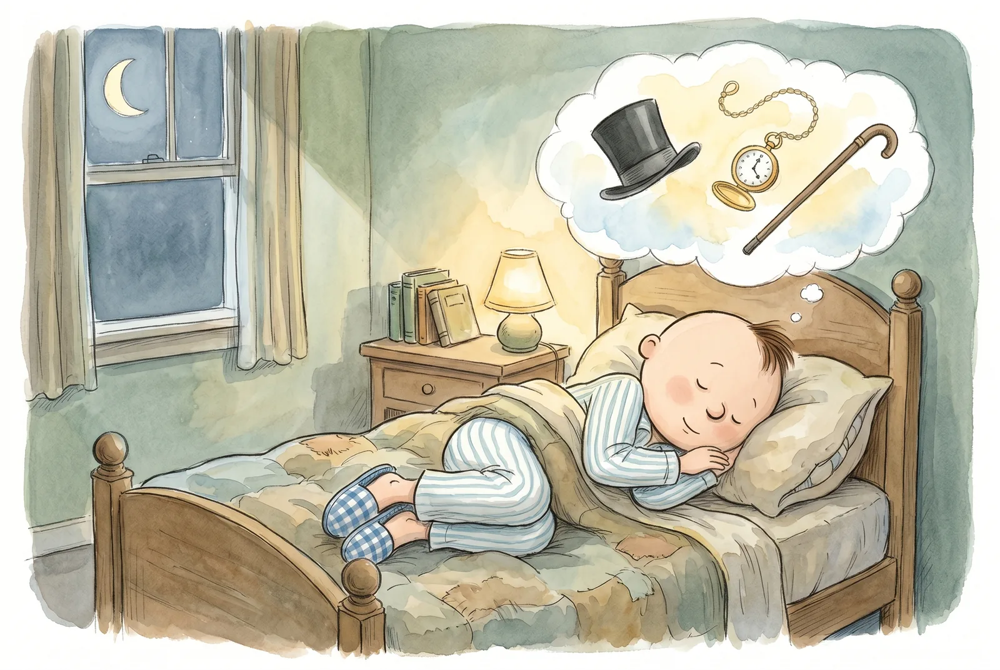

I

Dear Margot and Charlotte,
Once upon a time, there lived a boy who dreamed every night, when he fell upon his soft and lumpy pillow, that he would be, one day, a great gentleman. His name is Barnaby Sebastian Rhodes, and he is about to turn eight years old!
There are very few occasions better than a birthday — and besides honey mustard on a chicken finger, nothing beats cookies-and-cream ice cream cake!